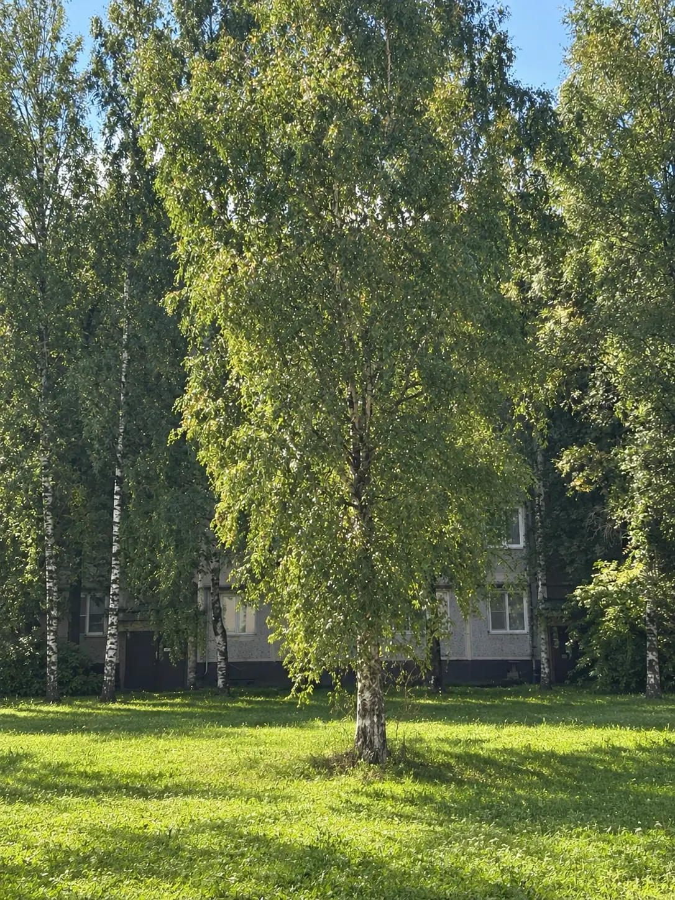

Сначала разберись
Прочитай методическое пособие и пройди обучение. Там есть фотографии подходящих листьев и короткий тест.
«Я придумала этот проект, потому что хотела понять, как чувствуют себя деревья на улицах моего города»
Меня зовут Полина Панина. Я школьница из Кингисеппа, учусь в школе № 1 и занимаюсь в детском технопарке «Кванториум».
Я собирала листья берёзы, измеряла их и сравнивала улицы Кингисеппа. Результаты отличались. Тогда появился новый вопрос: сможет ли другой школьник повторить мой маршрут и получить данные, которые можно проверить?
Так появился «ЭкоБиоМониторинг» — с инструкцией, паспортом территории, проверкой заявок и общей картой. Для меня важно, чтобы за каждой опубликованной цифрой оставались фотография листа, дерево и место сбора.
Сначала я сравнивала участки Кингисеппа. По листьям берёзы рассчитывала флуктуирующую асимметрию, отдельно оценивала транспортную нагрузку. Для сопоставления использовала корреляции Спирмена и Пирсона. Они показывают, как изменяются показатели вместе, но не устанавливают причину различий.
На карте сохранены 18 точек пилотного исследования. Новые наблюдения проходят проверку и не подменяют исходные результаты. Платформа помогает повторить сбор по единой инструкции, организовать своё исследование и подключить других участников.
В научном описании используется слово «скрининг»: это предварительный поиск участков, требующих внимания. Сайт называется «мониторинг», потому что рассчитан на повторные наблюдения. Опрос о понятности названия оформляется отдельно; его результаты не заменяют научное определение метода.
Выбери место, собери листья по инструкции и отправь наблюдение. После проверки оно появится на карте.
Карта помогает заметить места, которые стоит исследовать подробнее. Высокое значение ФА — повод посмотреть на условия вокруг дерева, но не диагноз качеству воздуха.
Все наблюдения проходят по одному маршруту: сбор, фотографирование, разметка и проверка. Поэтому видно не только итоговое число, но и откуда оно взялось.

Берёза повислая встречается в разных частях Кингисеппа. У её листа удобно сопоставлять левую и правую стороны. Небольшие случайные различия между ними называют флуктуирующей асимметрией, или ФА.
На форму листа влияет не один фактор. Поэтому отдельное значение ничего не доказывает само по себе. Смысл появляется, когда много листьев собраны по одинаковым правилам и результаты сравнивают между точками.
Прочитай методическое пособие и пройди обучение. Там есть фотографии подходящих листьев и короткий тест.
Выбери от 2 до 5 берёз в одной точке, сфотографируй деревья и 10–30 листьев с каждого.
Укажи место, добавь снимки и поставь точки на листьях. Модератор проверит разметку и заявку.
Вы увидите весь путь своей заявки: отправку, замечания модератора, расчёт и публикацию. Раздел сертификата откроется после обучения; его скачивание появится после утверждения макета.
Можно сразу создать аккаунт или сначала посмотреть, как выглядят уже подтверждённые наблюдения.